Die auf dieser Seite beschriebenen Patente wurden von
Ing. Peter Kuntschitsch entwickelt und in Österreich
erteilt.
AT 518 732 und AT 515 562
Auf dieser Seite werden die von Ing. Peter Kuntschitsch entwickelten und in Österreich erteilten Patente vorgestellt.
Die Patente behandeln Themen aus den Bereichen Energietechnik, Elektromagnetismus, Antriebstechnik und technische Innovation.
Erfinder: Ing. Peter Kuntschitsch
Das Patent AT 518732 beschreibt einen Flächenschrittmotor, bei dem zwei gegenüberliegende Flächen durch eine Vielzahl elektrisch und/oder magnetisch wirkender Aktuatorelemente relativ zueinander bewegt werden.
Der entscheidende Gedanke geht dabei über einen klassischen Linearantrieb hinaus: Die Relativbewegung kann in einer oder beiden Flächenrichtungen erfolgen und auf ebene, gekrümmte und dreidimensionale Strukturen übertragen werden.
Link: Österreichisches Patentamt Patentdokument AT 518 732 öffnen
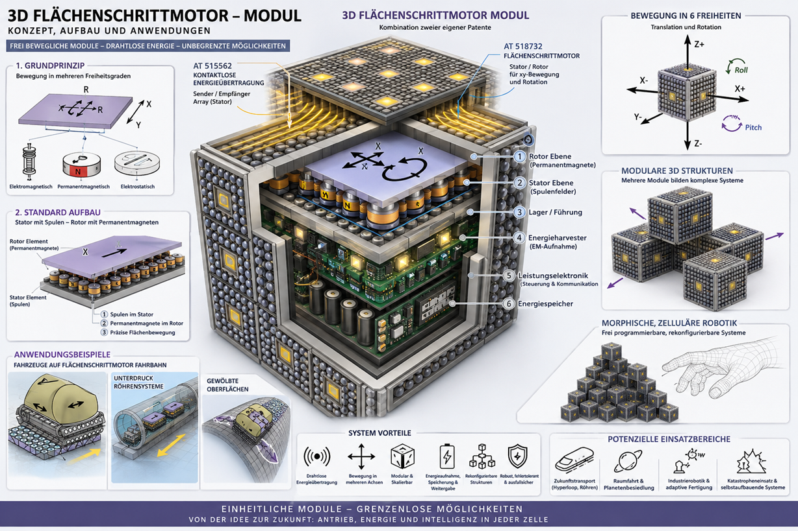
Zur Veranschaulichung der Patentidee wurde ein funktionsfähiger Demonstrator aufgebaut.
Der Demonstrator zeigt die grundlegenden Bewegungsprinzipien des Flächenschrittmotors sowie das Zusammenwirken von Rotor- und Statorelementen.
Im Gegensatz zu klassischen Linearantrieben ermöglicht das Konzept Bewegungen in mehreren Freiheitsgraden auf einer Fläche und bildet damit die Grundlage für zweidimensionale Antriebssysteme, adaptive Maschinenstrukturen und frei programmierbare Bewegungssysteme.
Die in den Videos gezeigten Versuche dienen als experimenteller Nachweis der Funktionsfähigkeit wesentlicher Grundprinzipien des Patents.
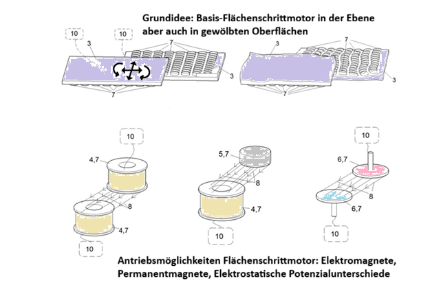
Der Flächenschrittmotor erweitert das Prinzip des klassischen Linearschrittmotors von einer einzelnen Bewegungsachse auf eine vollständige Fläche. Dadurch werden Bewegungen nicht nur in X-Richtung, sondern in mehreren Freiheitsgraden möglich. Je nach Anwendung können elektromagnetische, permanentmagnetische oder elektrostatische Antriebe verwendet werden.
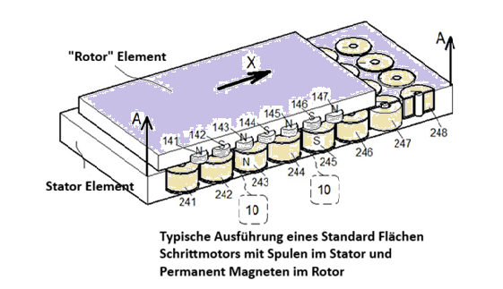
Die Zeichnung zeigt einen typischen Aufbau mit Spulen im Stator und Permanentmagneten im beweglichen Rotor. Durch gezielte Ansteuerung der Spulen entstehen elektromagnetische Kraftfelder, welche den Rotor präzise über die Fläche bewegen. Das Grundprinzip ist mit klassischen Schrittmotoren verwandt, wird jedoch auf zweidimensionale Bewegungen erweitert.
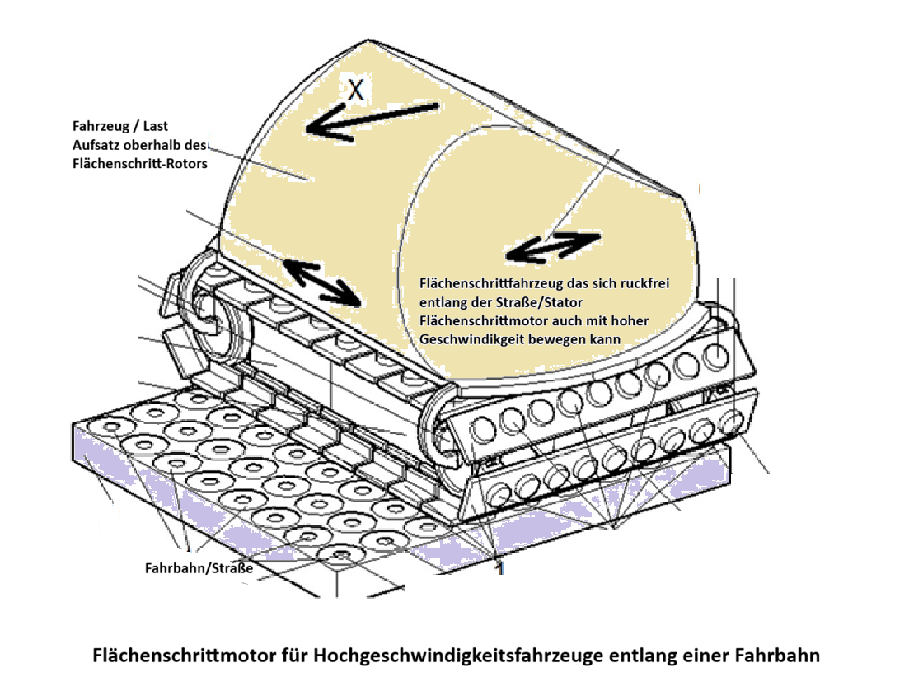
Eine mögliche Anwendung besteht darin, die komplette Fahrbahn als Stator auszubilden. Das Fahrzeug enthält dabei lediglich die beweglichen Rotorelemente und kann entlang der Fahrbahn ohne klassischen Radantrieb beschleunigt werden. Das Konzept erlaubt prinzipiell hohe Geschwindigkeiten, präzise Positionierung und eine direkte Kopplung zwischen Infrastruktur und Fahrzeug.
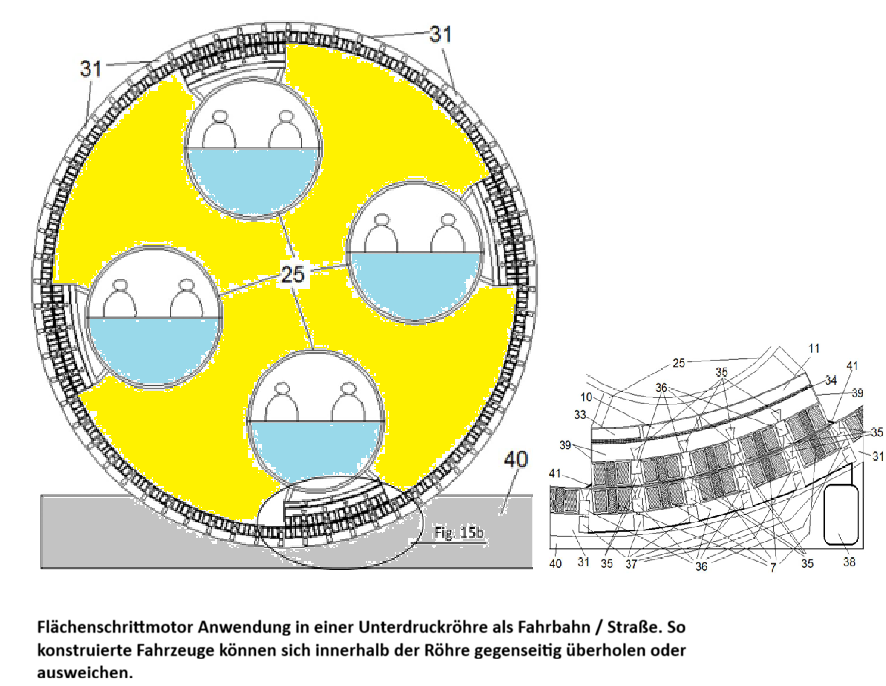
Das Patent beschreibt auch Anwendungen innerhalb von Röhrensystemen. Mehrere Fahrzeuge können sich dabei innerhalb derselben Röhre bewegen, einander ausweichen oder überholen. Die Kombination aus Flächenschrittmotor und reduziertem Luftwiderstand eröffnet neue Möglichkeiten für zukünftige Transportsysteme.
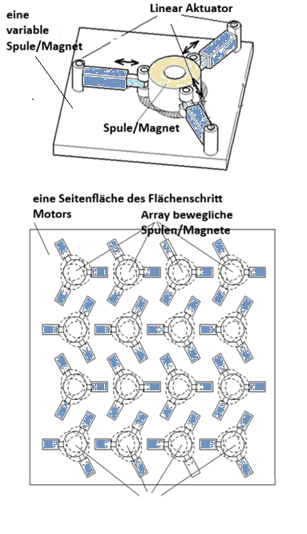
Das Konzept kann auf einzelne Aktoren heruntergebrochen werden. Mehrere kleine Antriebseinheiten lassen sich zu größeren Flächen kombinieren und ermöglichen verteilte Bewegungsfunktionen. Dadurch entstehen modulare Systeme, welche sich flexibel an unterschiedliche Aufgaben anpassen können.
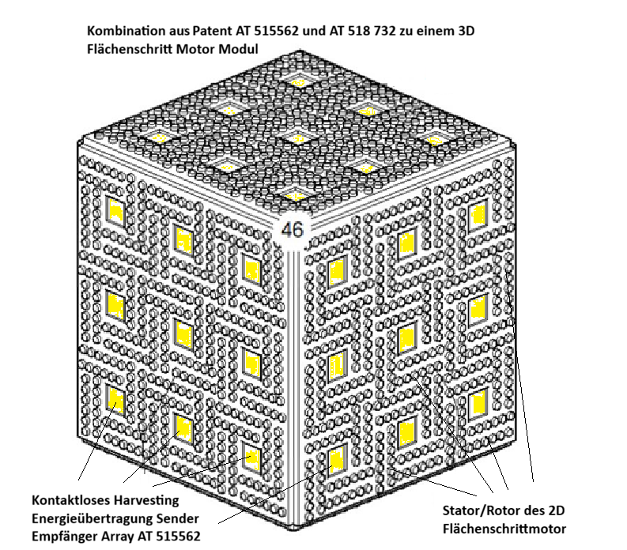
Durch die Kombination mehrerer Flächenschrittmotor-Flächen entsteht ein dreidimensionales Bewegungsmodul. In dieser Darstellung wird zusätzlich das Patent AT 515562 zur kontaktlosen Energieübertragung integriert. Dadurch können Bewegungsfunktionen und Energieversorgung innerhalb desselben Moduls zusammengeführt werden.
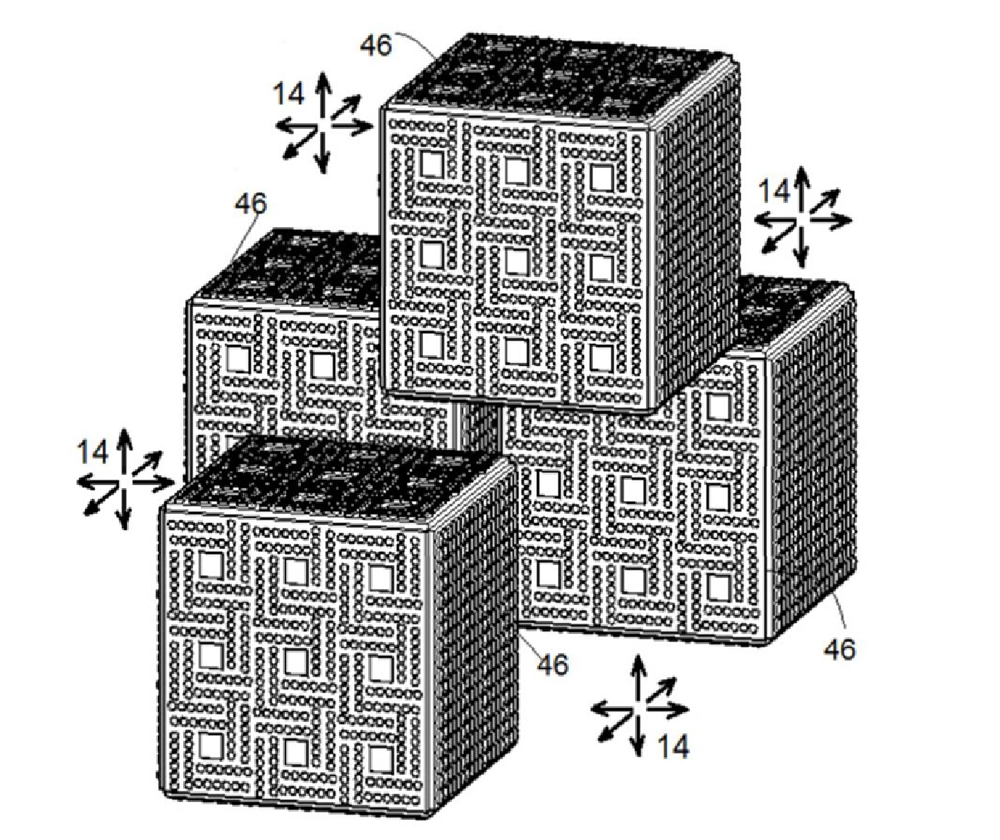
Mehrere Module können zu größeren Einheiten kombiniert werden. Jedes Modul bleibt dabei unabhängig beweglich und kann seine Position relativ zu den Nachbarmodulen verändern. Aus einfachen Standardbausteinen entstehen so komplexe Strukturen mit hoher Anpassungsfähigkeit.
Das Patent AT 518732 beschreibt einen zweidimensionalen Flächenschrittmotor, dessen Rotoren sich auf einer Fläche in mehreren Freiheitsgraden bewegen können.
Die Patentschrift zeigt zahlreiche Antriebskonzepte, Fahrzeuganwendungen, dreidimensionale Module sowie die Möglichkeit gekrümmte Oberflächen und komplexe Bewegungsräume zu erzeugen.
Eine weiterführende Überlegung besteht darin, den Flächenschrittmotor mit der im Patent AT 515562 beschriebenen kontaktlosen Energieübertragung zu kombinieren.
Dadurch könnten dreidimensionale Module entstehen, die Energie drahtlos aufnehmen, speichern und an benachbarte Module weitergeben können.
Aus vielen solcher Module ließen sich frei programmierbare Strukturen aufbauen, die ihre Form verändern, sich selbst rekonfigurieren oder neue Funktionen erzeugen können.
Das langfristige Konzept dahinter ist eine zelluläre, morphische Robotik: Eine große Anzahl identischer Module bildet durch Zusammenarbeit komplexe Maschinen, Werkzeuge, Fahrzeuge oder technische Strukturen.
Solche Systeme könnten insbesondere dort interessant sein, wo Material, Ersatzteile und Wartungsressourcen nur begrenzt verfügbar sind – beispielsweise in autonomen Industrieanlagen oder bei langfristigen Raumfahrt- und Besiedlungsprojekten.
Die hier beschriebenen Konzepte stellen weiterführende Überlegungen und Visionen dar, die über den unmittelbaren Inhalt der Patentschrift hinausgehen.
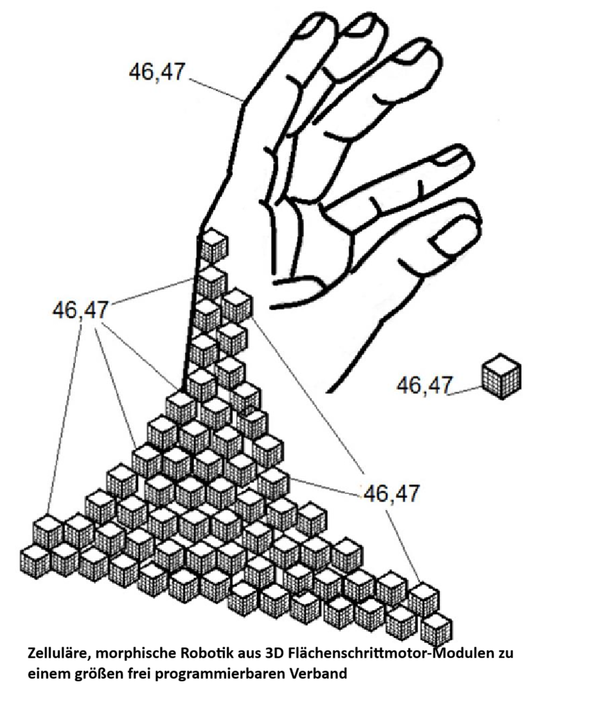
Die langfristige Vision besteht in frei programmierbaren Strukturen aus einer großen Anzahl identischer Module. Jedes Modul kann Energie aufnehmen, Energie übertragen und sich relativ zu anderen Modulen bewegen. Dadurch entstehen Systeme, die ihre Form und Funktion dynamisch verändern können. Anstelle vieler unterschiedlicher Bauteile würde eine einheitliche Grundstruktur verwendet, aus der sich Werkzeuge, Maschinen, Fahrzeuge oder ganze technische Systeme bedarfsgerecht zusammensetzen lassen. Diese Idee bildet die Grundlage einer möglichen zukünftigen morphischen und zellulären Robotik.
Der folgende Demonstrator veranschaulicht wesentliche Bewegungs- und Funktionsprinzipien des patentierten Flächenschrittmotors.
Erfinder: Ing. Peter Kuntschitsch
Dieses österreichische Patent beschäftigt sich mit der elektromagnetischen kontaktlosen Energieübertragung zwischen einer Fahrbahn und einem Fahrzeug während der Fahrt.
Die Technologie ermöglicht die Energieeinspeisung ohne mechanischen Kontakt und adressiert Fragestellungen der elektrischen Versorgung mobiler Systeme.
Link: Österreichisches Patentamt Patentdokument AT 515 562 öffnen
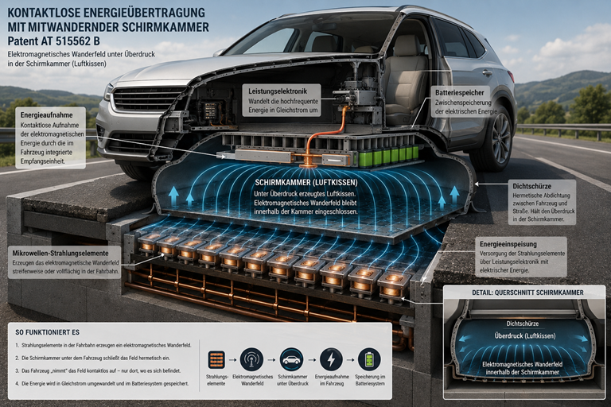
3D Schnitt der Patentidee geschirmter Mikrowellenstrahlung von Fahrbahn ins Fahrzeug.
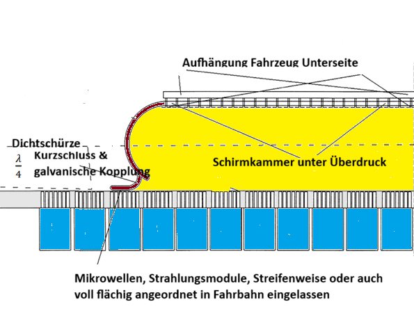
Das Fahrzeug bewegt sich über einer Schirmkammer, in der ein elektromagnetisches Wanderfeld erzeugt wird. Die Energie wird kontaktlos vom Fahrbahnsystem auf das Fahrzeug übertragen.
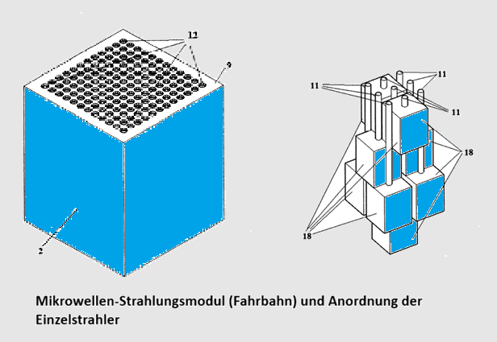
Die Energieeinspeisung erfolgt über eine Vielzahl einzelner Strahlungsmodule, die streifenweise oder vollflächig in die Fahrbahn integriert werden können.
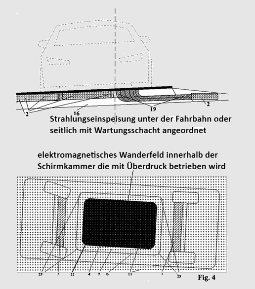
Die Energie wird nur in dem Bereich erzeugt, in dem sich das Fahrzeug befindet. Dadurch entsteht ein mitwanderndes Energiefeld innerhalb der Schirmkammer.
Zur Veranschaulichung des Patentes AT 515562 wurde ein Demonstrator aufgebaut, der das Grundprinzip einer kontaktlosen und geschirmten Energieübertragung entlang einer Fahrbahn vom Prinzip veranschaulicht.
Das folgende Video zeigt den zentralen Effekt des Demonstrators.
Patent AT 515562 beschreibt ein Verfahren zur kontaktlosen Energieübertragung zwischen einer Fahrbahn und einem Fahrzeug. Der Demonstrator zeigt das grundlegende Prinzip einer bewegten Energiequelle entlang der Fahrbahn.